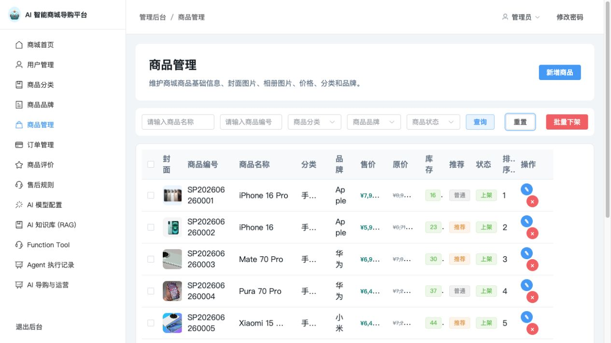

基础商城可维护
商品、分类、品牌、价格、库存、详情和售后规则形成可管理的商品底座。
一个把商品经营、知识工程与 AI 导购体验串在一起的电商产品实践：让用户能问、系统能查、答案可追溯，运营也能持续验收。

项目从一个真实的电商问题出发：用户不只想看商品列表，而是希望在预算、场景、偏好和商品事实之间得到可信建议。产品因此同时服务用户端体验和管理端运营。
商品、分类、品牌、价格、库存、详情和售后规则形成可管理的商品底座。
商品资料进入综合知识库，经过切片、Embedding 和相似度检索，作为回答依据。
记录用户输入、模型输出、工具调用和执行步骤，用标准用例持续验证准确率。
“基础商城和向量基础设施已经完成，但 AI 业务闭环和生产化业务闭环还没有完成。”
这句话也成为项目的阶段性判断标准：先让链路真实跑通，再用可观测记录和标准用例把效果做实。